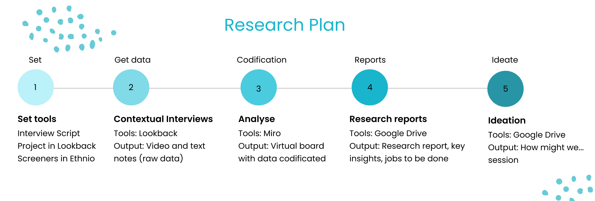
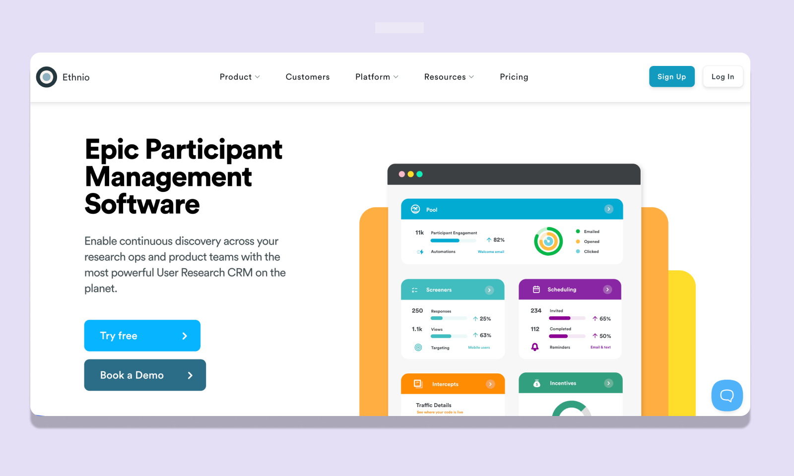
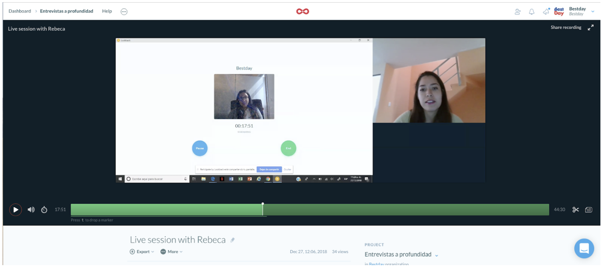
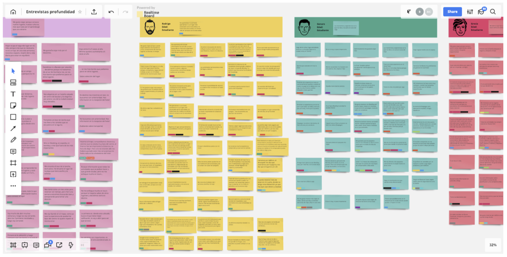
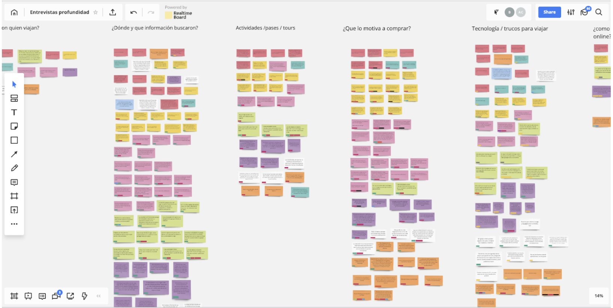
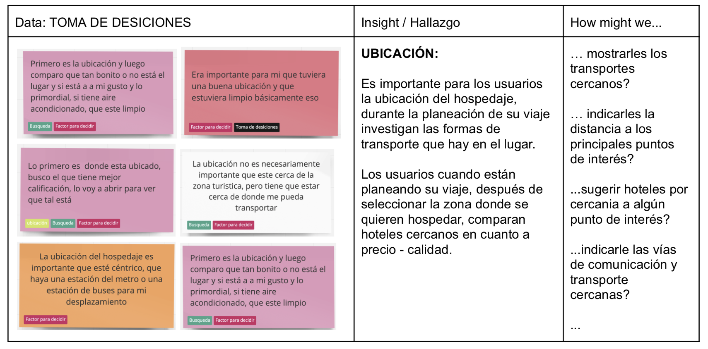

Data-Driven Initiative: Boosting Conversions by Prioritizing Projects Based on Research Insights.
User research focused on the online hotel booking process.


Overview
As a UX Designer for a leading OTA (Online Travel Agency) in Latam, I was tasked with conducting user research and gathering data to gain insights into the online hotel booking process and identify the pain points users encounter
The Goal
My goal was to thoroughly understand the entire booking process and provide the team with data that would guide better decision-making for future features on our platform.
Research
By getting closer to our clients, we can better understand the key factors that influence their decisions when planning a trip and booking online. To design a better product, it's essential to understand how users search and make decisions.
The Plan
I began by creating a roadmap to outline the timeline for the entire research process, from recruiting participants to delivering a report with the insights gathered.
1. Set Tools
We used Ethio to screen participants, and conducted the interviews through Lookback.
2. Contextual Interviews
The sample was 18 users, between 21 and 39 years old, 7 women’s and 11 men’s.
3. Analize Data
We created a virtual board in Miro, selecting this tool for its ability to facilitate transparency in our research and easily share all the content with the team.
Codification: We began by extracting users' answers and comments, adding them as "post-its" to our Miro board. Next, we grouped the data into "themes," which allowed us to create statements that represented the findings in each category. At this stage, our focus was solely on translating data into findings, without considering solutions yet.
4. Research Report - Findings
With a wealth of data in hand, our next step was to translate it into designs and business opportunities. A detailed report was shared with the team, giving each PM access. We also began incorporating additional data from Google Analytics.
Take it to an action
By combining qualitative insights with quantitative data from Google Analytics, we were able to:
- Identify actions that were not being tracked in GA.
- Prioritize tasks for upcoming sprints.
One key finding led us to further test our search-by-map feature, resulting in an improved user experience for those searching for hotels on a map